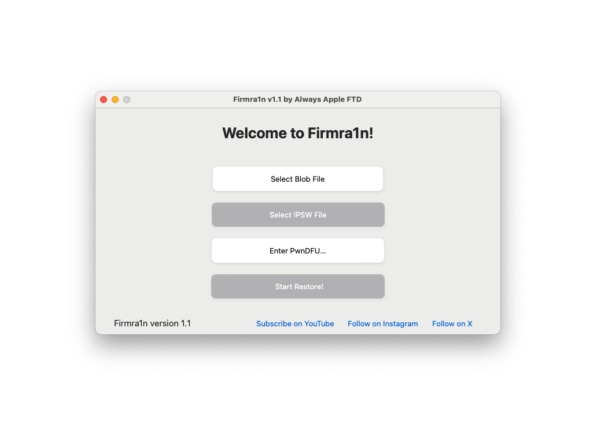

Presenting, Firmra1n!
This a free utility for restoring A8 to A11 devices with SHSH Blobs.
This includes the iPhone 6 to X. You can see the full list in the Supported Devices section.

Supported devices
iPhone 6
iPhone 6 Plus
iPhone 6s
iPhone 6s Plus
iPhone SE (1st generation)
iPhone 7
iPhone 7 Plus
iPhone 8
iPhone 8 Plus
iPhone X
iPad Pro 12.9-inch (2015)
iPad Pro 9.7-inch (2016)
iPad Pro 10.5-inch 1st generation
iPod touch 6th generation
iPod touch 7th generation
iPad 5th generation
iPad 6th generation
iPad 7th generation
NOTE: The tool does not support any devices that aren't checkm8-compatible.
The method that is used in this software does not support any non-checkm8 devices.
How to download Firmra1n
Open the link below to download the latest version.
Once you open the site, click on the blue download button to download.
NOTE: If you see the message that the app cannot be opened because it's
from an unidentified developer, then just Right-click on the app file and select open.
This will allow you to open the bypass the unidentified developer message and open the app.
How to use Firmra1n
VERY IMPORTANT! Before you continue, it is very important for you to know about the SEP issues.
SEP is a file in IPSW files. Certain SEP are not compatible, meaning that a downgrade to that version
on that device will completely brick your device, rendering it unusable unless you restore to the latest iOS.
Please read This Page to know which versions are compatible with what devices.
Some examples are, A9 and A10 devices can only be restored to versions 14.0 and up,
and A8 and A7 devices can only be restored to iOS versions 11.3 and up.
How to use Firmra1n (continued)
[1] Open up the app that you downloaded from here.
If you encounter the "Untrusted Developer" message, then follow the steps above to fix that issue.
Any further launching issues you should contact me about.
[2] Enter DFU Mode on your device. There are various ways of doing this, depending on your device.
I would recommend looking up "How to Enter DFU Mode on " and then your device model.
Example might be "How to Enter DFU Mode on iPhone 7 Plus".
[3] Click on the "Select Blob File" button.
It will open a file selection menu where you can select your SHSH blob file.
NOTE: You can only restore to blobs that have been saved for your device.
If they have been saved by the TSS Saver site or my SHSH Saver app, then they can be used fine with your device.
Once selected, press the "OK" button.
[4] Click on the "Select IPSW File" button.
NOTE: You must know the iOS version of your device in order to continue!
In most cases you can connect it to your Mac and read the version, or check in Settings.
But if you bought the device and it's passcode locked,
then I highly recommend you looking into Wipera1n, a free tool for wiping iDevices without losing the iOS version.
This works the same way, but without you needing to know the exact version.
You only have to put a close version, like 13.0 on a 13.7 device.
If you don't know the iOS version, then you can take a rough guess on the version.
The only other option if you really want to use Firmra1n is if you brute force the iOS version.
This is most times not possible, as it requires an enormous amount of disk space and is super time consuming.
You would start by figuring out the main version, like 11, or 14.
Then, you would download every IPSW for that version from IPSW.me, then try every firmware with your blobs.
I've done this before, and it works fine.
But I definitely don't recommend it.
Once your corresponding IPSW has been selected, then you can continue with the next step.
[5] Click on the "Enter PwnDFU Mode" button. This may take a second to complete.
You will see a pop-up when it's done, then press OK and move on to the last step.
[6] Click the "Start Restore!" button.
You will have to agree to all the pop-ups, then in about a minute,
the device should light up with the red screen.
You may also get the "iBSS Failed to send" error.
Do not worry, as the normal fix for this is to re-run the restore again.
The device should light up red the next time.
If the device does not light up at all, then there was an error while booting the device.
Please contact me with your issue and I will try to help you.
The device will go from red, to green, then the Apple logo,
then you will see some verbose text, and finally, the restore bar will appear.
Please be patient. The restore will complete, then the device will reboot.
Enjoy using restored device! Remember about the SEP issues, which is very important to keep in mind while using this tool.
If you want to learn more about SHSH Saver, then please visit the SHSH Saver Page.
Hope you enjoy using my software!
Need help?
I'm here to help if you need it.
I try my best to make Firmra1n user-friendly and fix any bugs
but feel free to report any problems to me.
Website made by Always Apple FTD. Please do not copy any part of this website.